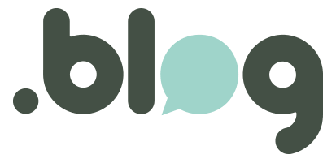
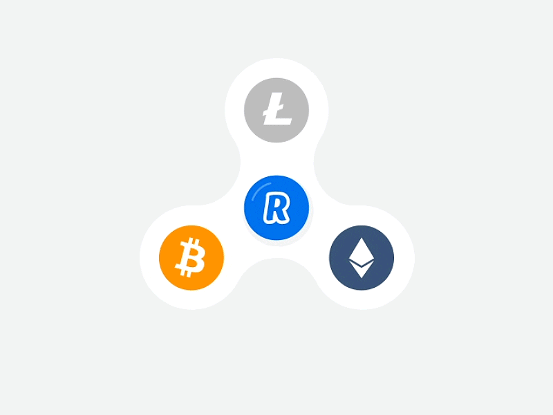

Know more about my projects
Here I have explained how was my journey so far on projects and what i have learned from the projects
-
.gif)
OMNIFOOD
Omnifood is my first project which I learned to make from udemy and by this i have learned so much about html and css and it got me intrest in HTML and CSS and I suggest every new learner of web to start from this which was very useful for me. First i wanted to explore the field of machine learning but I came through a app called mimo which was a app which teaches web so soon after using the app for a while i Had intrest in web development and wanted to explore in that field so i came through a course on udemy on complete teaching and building of a website on own so omni food was my first project in web development
Link to Repo -
AMFOSS TASKS
I have completed AMFOSS tasks which was the way for entering into club by whih i have learned many things and also explored new fields and learned new languages. I always wanted to join AMFOSS club but at start i was unable to join as i was new to the field of proggraming and didn't know much about it so i completed my AMFOSS tasks during my second semester and apllied for joining AMFOSS club I loved the works and projects that were assigned to me and i loved to work on them and it was the way for exploring new things and new fields
Link To Repo -

Bug_Tracker
I have completed this project using django framework for which i had to learn django as this was new for me at start i was having so much trouble in understanding django and i faced many errors for this project but due to my hardwork and effort i have completed this project this project is not a tracker of bugs but a files uploader of user. At starting I was unable to understand this project and faced many difficulty while doing the project but as time passed i learned new things daily and loved to explore and find solution for my problems, The field of django waas very difficult for me but it was intresting and easy to understand by reading documentation by django
Link To Repo -

A Blog Page
I have also created another blog page from which i learned some new tags and was very helpful for me as this was my first blog page.This was a Part of AMFOSS task where it was given to make a blog on your own the old blog was not so good as that was the ffirst time i was making a blog page so start was difficult but i managed to create and make a blog post by my own.
Link To Repo -
.gif)
Block Chain
I have learned to create a blockchain and also created a block chain which creates blocks one by one and it contains information and also every block has its own hash and previous hash.
Link To Repo
Let's know more about Blockchain
Definition:
A blockchain is a continuosly growing list of records,called blocks,which are linked and secured using cryptography.
the concept of blockchain first came fromStuart Haber and W.Scott Stornetta
At starting i had many problems in understanding what is a block chain and how does it works by soon after making efforts and exploring new things i learned more about blockchain then soon after learning i was able to create a blockchain with every block having diffrent hash and previuos hash and you can also store data in it. -

CryptoCurrency
I have created a cryptocurrency by my own which is name as mycoin and it totally works as normal cryptocurrency it contains transactions field and it also contains makes new transactions field and when miner mines the block he gets reward for mining as 1 mycoin
Link To Repo
Definition: A cryptocurrency (or crypto currency) is a digital asset designed to work as a medium of exchange that uses strong cryptography to secure financial transactions, control the creation of additional units, and verify the transfer of assets.Cryptocurrencies use decentralized control as opposed to centralized digital currency and central banking systems.